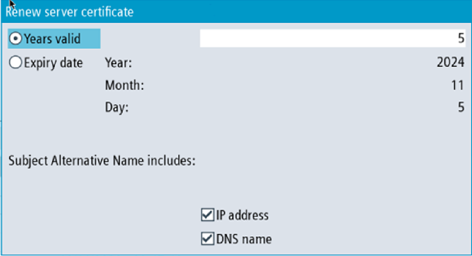

① | The name of the OPC UA server certificate is shown in the upper part of the screen. |
② | You can renew the server certificates. |
③ | You can export the server certificate to a configured device. |
④ | You can leave the OPC UA dialogs. |
⑤ | The details of the server certificate are shown in the lower part of the screen. You can scroll down to see further certificate attributes. |
Server Certificate
The server certification can be renewed at any time. With the renewal the following things can be specified by the administrator:
Expiration date of the certificate / validity in years
| Note |
Before using this dialog make sure that the date and the time of SINUMERIK Operate is set correctly, as the certificate will be valid from the current date in SINUMERIK Operate at the time of renewal. |
Decision if IP address and/or DNS name should be mentioned in the server certificate
| Note |
Many clients will need the IP address in the certificate for validation. If the server will be addressed by DNS name (e. g. because the IP address of the OPC UA server changes frequently due to a dynamic assignment by a DHCP server), it is recommended only to include the DNS name in the certificate. Because otherwise the certificate must be renewed and exchanged with every change of the IP address. |
To renew a server certificate, proceed as follows:
Press the softkey "Renew".
A pop-up screen will appear that offers two ways of selecting a time period:
Select the number of years, the server certificate will be valid
Specify a precise date, the server certificate will expire
Specify also whether the IP address and/or the DNS name should be written in the server certificate.
Renew server certificate
Pressing the softkey "Cancel" will ignore all input and return to the "Server" dialog.
Pressing the softkey "Ok" will save the input to the system, the currently valid certificate will be deleted and with the next start of SINUMERIK Operate the new certificate gets created.
For an offline preparation of the connection to the server, you can export the server certificate. After that the certificate can be imported and trusted on the client side.
Press the softkey "Export".
A pop-up screen will appear showing the SINUMERIK filesystem to export. You can navigate to a location on the SINUMERIK filesystem to export the OPC UA server certificate.
Pressing the softkey "Cancel" will ignore all input and return to the "Server" dialog.
Pressing the softkey "Ok" will export the certificate.